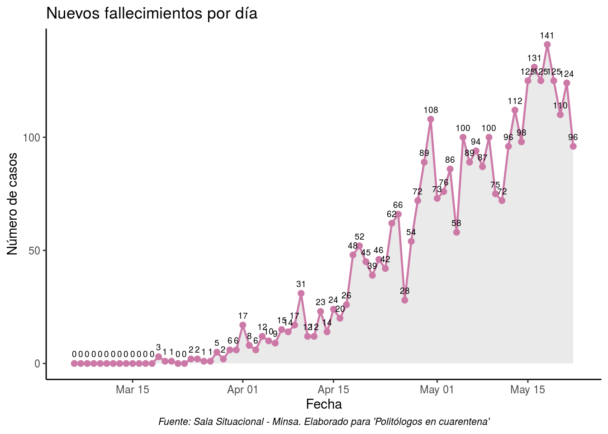

Evolución del COVID-19 en el Perú
Introducción
El dia 06 de marzo del 2020 se registró el primer caso de coronavirus en el Perú. Fueron tomadas las medidas iniciales y el dia 15 de marzo se anuncio el inicio del Estado de Emergencia Nacional junto con la medida de Aislamiento Social Obligatorio, para esa fecha se habian registrado 71 casos positivos. Al finalizar el mes de marzo se registraron 1065 nuevos casos. Un mes después se habián pasado los 36 mil casos.
En ese sentido, esta sección tiene por objetivo responder a la pregunta ¿Cómo se ha desarrollado la propagación del COVID-19 en el Perú?
Base de los datos sobre el COVID-19 en el Perú Aquí
Evolución de los casos positivos detectados


Nuevos casos positivos detectados por día

Evolución del total de fallecimientos

Nuevos fallecimientos por día
Evolución de nuevos de hospitalizados por dia

Evolución de nuevos de hospitalizados por dia

Evolución de personas en UCI

1.8. Evolución en la disponibilidad de camas UCI
Evolución de los casos positivos activos
El número de casos activos es registrada descontando de los casos confirmados al número de muertos y los pacientes recuperados. Esta cifra ha variado en la tendencia por un aumento considerable en el número de recuperados.
Casos activos = Total de positivos detectados - (Total de fallecidos + Total de recuperados)

Datos actualizados al 09/05/2020